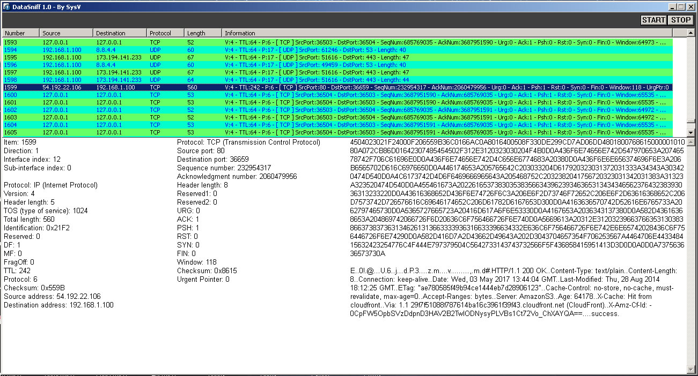

DataSniff - Visualizador de pacotes de rede.

DataSniff Version
1.0
Download source code
Download binaries
Aplicação utilizada para analisar pacotes de rede,
interceptando-os com a biblioteca
WinDivert e exibindo
suas informações em uma janela. Desenvolvido utilizando a
linguagem C e a WinAPI, e compilado com GCC (MinGW).